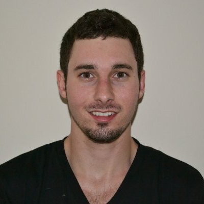

My name is Anthony DiTocco, and I am native to sunny Fort Lauderdale, Florida. Currently I am pursuing a computer engineering degree at the University of Florida. My major is Digital Arts and Sciences (DAS), which is a specialized program integrating engineering and design to create software that is computationally complex, user friendly, and aesthetically pleasing. Some of my main interests include computer graphics, multimedia production, music (electric, acoustic, and bass guitar), and software/game development. I am fascinated by the intersection of art and technology, and I look forward to participating in the evolving field of creative computing.